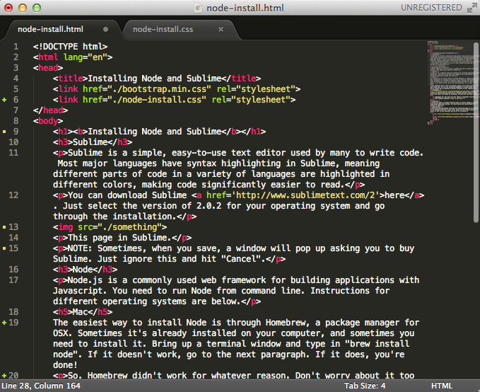

Sublime is a simple, easy-to-use text editor used by many to write code. Most major languages have syntax highlighting in Sublime, meaning different parts of code in a variety of languages are highlighted in different colors, making code significantly easier to read.
You can download Sublime here. Just select the version of 2.0.2 for your operating system and go through the installation.
This page in Sublime.
NOTE: Sometimes, when you save, a window will pop up asking you to buy Sublime. Just ignore this and hit "Cancel".
Node.js is a commonly used web framework for building applications with Javascript. You need to run Node from command line. Instructions for different operating systems are below.
The easiest way to install Node is through Homebrew, a package manager for OSX. Sometimes it's already installed on your computer, and sometimes you need to install it. Bring up a terminal window and type in "brew install node". If it doesn't work, go to the next paragraph. If it does, you're done!
So, Homebrew didn't work for whatever reason. Don't worry about it too much right now. You can try installing Homebrew to install Node, but you'll likely end up messing up default settings on your computer.
Here is a guide to getting Node.js setup with a Windows machine. There's some extra info there that might be confusing, so below are the basic steps:
There are about a million different ways to install things on various Linux-based operating systems. The links below have instructions for several of them.
Here are some additional resources for installing Node.js to reference if the methods above don't work. Don't waste too much time trying to figure it out on your own; just ask one of us to help!
MongoDB is one of the most popular databases. It's based on a noSQL architecture (which we'll explain in class). You need use command line to access a MongoDB database. Instructions for different operating systems can be found on their website or below.
The easiest way to install Node is through Homebrew, a package manager for OSX. Sometimes it's already installed on your computer, and sometimes you need to install it. Bring up a terminal window and type in "brew install mongodb". If it doesn't work, go to the next paragraph. If it does, you're done!
So, Homebrew didn't work for whatever reason. Don't worry about it too much right now. You can try installing Homebrew to install MongoDB, but you'll likely end up messing up default settings on your computer.
The easiest thing to do is follow their detailed directioins, provided here.